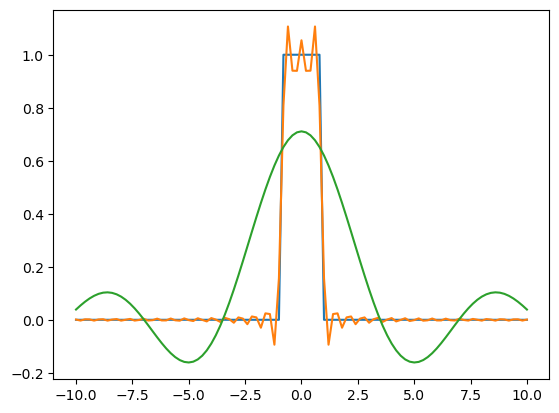

Transformada de Fourier complexa numérica#
# import numpy
from numpy import *
# intervalo de interesse (-a,a)
a = 10
numpoints = 101
x = linspace(-a,a, numpoints, endpoint = True, dtype = complex)
# Definindo uma função numérica
#f = exp(-x**2)
#f = piecewise(x, [x < 0, x >= 0], [0, 1])
f = piecewise(x, [x < -1, (x>-1) & (x<1), x>1], [0,1,0], dtype = complex)
print(f)
# Calculando a Transformada de Fourier
w = linspace(-a,a,numpoints,endpoint = True)
F_f = zeros(len(w), dtype = complex)
for i in range(len(F_f)):
for j in range(len(F_f)):
F_f[i] = F_f[i]+f[j]*exp(-1j*x[j]*w[i])
F_f = F_f/sqrt(2*pi)/numpoints*2*a
print(F_f)
# Calculando a transformada inversa
ff = zeros(len(w), dtype = complex)
for i in range(len(ff)):
for j in range(len(F_f)):
ff[i] = ff[i]+F_f[j]*exp(1j*x[i]*w[j])
ff = ff/sqrt(2*pi)/numpoints*2*a
print(ff)
[0.+0.j 0.+0.j 0.+0.j 0.+0.j 0.+0.j 0.+0.j 0.+0.j 0.+0.j 0.+0.j 0.+0.j
0.+0.j 0.+0.j 0.+0.j 0.+0.j 0.+0.j 0.+0.j 0.+0.j 0.+0.j 0.+0.j 0.+0.j
0.+0.j 0.+0.j 0.+0.j 0.+0.j 0.+0.j 0.+0.j 0.+0.j 0.+0.j 0.+0.j 0.+0.j
0.+0.j 0.+0.j 0.+0.j 0.+0.j 0.+0.j 0.+0.j 0.+0.j 0.+0.j 0.+0.j 0.+0.j
0.+0.j 0.+0.j 0.+0.j 0.+0.j 0.+0.j 0.+0.j 1.+0.j 1.+0.j 1.+0.j 1.+0.j
1.+0.j 1.+0.j 1.+0.j 1.+0.j 1.+0.j 0.+0.j 0.+0.j 0.+0.j 0.+0.j 0.+0.j
0.+0.j 0.+0.j 0.+0.j 0.+0.j 0.+0.j 0.+0.j 0.+0.j 0.+0.j 0.+0.j 0.+0.j
0.+0.j 0.+0.j 0.+0.j 0.+0.j 0.+0.j 0.+0.j 0.+0.j 0.+0.j 0.+0.j 0.+0.j
0.+0.j 0.+0.j 0.+0.j 0.+0.j 0.+0.j 0.+0.j 0.+0.j 0.+0.j 0.+0.j 0.+0.j
0.+0.j 0.+0.j 0.+0.j 0.+0.j 0.+0.j 0.+0.j 0.+0.j 0.+0.j 0.+0.j 0.+0.j
0.+0.j]
[ 0.03869026-3.50823687e-16j 0.05408434-2.80658950e-16j
0.06814731-8.77059218e-17j 0.08040365+1.75411844e-17j
0.09041894+1.40329475e-16j 0.09781333+1.57870659e-16j
0.10227378+1.57870659e-16j 0.10356486+2.10494212e-16j
0.10153758+1.40329475e-16j 0.09613612+1.31558883e-16j
0.08740227+5.48162011e-17j 0.07547728+2.02819944e-17j
0.06060123-1.00861810e-16j 0.04310965-2.76273654e-16j
0.02342771-3.68364872e-16j 0.00206184-4.91153162e-16j
-0.02041093-5.70088492e-16j -0.04335563-7.19188559e-16j
-0.06609385-7.89353296e-16j -0.08791966-8.85829810e-16j
-0.10811658-9.91076917e-16j -0.12597518-1.05247106e-15j
-0.14081096-1.13140639e-15j -0.15198194-1.13140639e-15j
-0.1589056 -1.05247106e-15j -0.16107483-1.07878284e-15j
-0.15807218-1.02615929e-15j -0.14958248-9.38453363e-16j
-0.13540303-8.72673922e-16j -0.11545148-7.25766503e-16j
-0.08977091-6.05719023e-16j -0.05853203-4.95538458e-16j
-0.02203252-2.89429542e-16j 0.01930673-2.41191285e-16j
0.0649482 -5.26235531e-17j 0.1142472 +7.89353296e-17j
0.16646387+1.75411844e-16j 0.22077757+3.33282503e-16j
0.27630331+4.03447240e-16j 0.3321098 +4.82382570e-16j
0.3872388 +5.52547307e-16j 0.4407253 +5.96400268e-16j
0.49161797+6.22712045e-16j 0.53899959+5.78859084e-16j
0.5820068 +5.35006123e-16j 0.61984885+4.73611978e-16j
0.65182482+3.94676648e-16j 0.67733895+3.15741319e-16j
0.69591371+2.14879508e-16j 0.70720028+1.18402994e-16j
0.71098624+0.00000000e+00j 0.70720028-1.09632402e-16j
0.69591371-2.19264805e-16j 0.67733895-3.28897207e-16j
0.65182482-4.03447240e-16j 0.61984885-4.73611978e-16j
0.5820068 -5.35006123e-16j 0.53899959-5.78859084e-16j
0.49161797-5.87629676e-16j 0.4407253 -5.87629676e-16j
0.3872388 -5.52547307e-16j 0.3321098 -5.08694347e-16j
0.27630331-4.29759017e-16j 0.22077757-2.98200134e-16j
0.16646387-2.36805989e-16j 0.1142472 -7.89353296e-17j
0.0649482 +2.63117765e-17j 0.01930673+1.62255955e-16j
-0.02203252+3.28897207e-16j -0.05853203+4.68130358e-16j
-0.08977091+6.05719023e-16j -0.11545148+7.49885632e-16j
-0.13540303+8.20050369e-16j -0.14958248+9.55994548e-16j
-0.15807218+1.01738869e-15j -0.16107483+1.07878284e-15j
-0.1589056 +1.08755343e-15j -0.15198194+1.06124165e-15j
-0.14081096+1.06124165e-15j -0.12597518+1.08755343e-15j
-0.10811658+9.91076917e-16j -0.08791966+8.85829810e-16j
-0.06609385+8.77059218e-16j -0.04335563+7.10417967e-16j
-0.02041093+5.96400268e-16j 0.00206184+4.91153162e-16j
0.02342771+3.68364872e-16j 0.04310965+2.32420693e-16j
0.06060123+1.46907419e-16j 0.07547728+1.48003743e-17j
0.08740227-5.48162011e-17j 0.09613612-1.31558883e-16j
0.10153758-1.71026548e-16j 0.10356486-1.92953028e-16j
0.10227378-1.57870659e-16j 0.09781333-1.57870659e-16j
0.09041894-8.77059218e-17j 0.08040365+0.00000000e+00j
0.06814731+4.38529609e-17j 0.05408434+2.80658950e-16j
0.03869026+3.50823687e-16j]
[ 8.65166395e-04+6.57794414e-18j -2.93828615e-03+5.42406310e-16j
1.74005913e-03+2.70792034e-16j 1.47132746e-03+5.69677370e-16j
-3.11835188e-03+6.42171796e-16j 1.27989470e-03+5.67895844e-16j
2.07992591e-03+3.00992334e-16j -3.20243607e-03+8.17857721e-16j
7.26794286e-04+7.79760461e-16j 2.67877904e-03+7.33166690e-17j
-3.18259843e-03+3.45342067e-17j 8.43037806e-05+2.17894400e-16j
3.25755639e-03-8.46910308e-17j -3.05204900e-03-4.53878145e-16j
-6.45603979e-04+2.81481193e-16j 3.80889055e-03+6.90410053e-16j
-2.80449141e-03+1.94597514e-16j -1.46475377e-03+4.22924122e-16j
4.32998596e-03+8.58421710e-16j -2.43287689e-03+6.03800456e-16j
-2.38247968e-03+5.35554285e-16j 4.82520196e-03+9.72439408e-16j
-1.92708299e-03+1.15908857e-15j -3.42225390e-03+6.20519397e-16j
5.31066665e-03+1.87471408e-16j -1.26945343e-03+4.46203877e-16j
-4.63450919e-03+4.14410481e-16j 5.82344892e-03+3.32734341e-16j
-4.25667564e-04+4.03627106e-16j -6.12388433e-03+1.56774335e-16j
6.44197848e-03+8.82540838e-17j 6.75751549e-04+1.53074242e-16j
-8.11416598e-03+1.64448603e-16j 7.33797533e-03-7.23573855e-17j
2.19554993e-03-8.63355168e-17j -1.11282394e-02-5.86533352e-17j
8.93391358e-03-1.54581687e-16j 4.54149647e-03-1.34025612e-16j
-1.66071821e-02-4.27566369e-17j 1.25247270e-02-1.33049198e-16j
8.99047759e-03-1.79797140e-16j -2.99558096e-02-1.04973025e-16j
2.42241816e-02-6.44090363e-17j 2.16353473e-02-6.96165754e-17j
-9.39689082e-02-6.41349553e-17j 1.56478221e-01-6.98906565e-17j
8.08429526e-01-9.48320280e-17j 1.10664003e+00-5.19383506e-17j
9.39825620e-01-4.05639888e-17j 9.39294771e-01-2.68599386e-17j
1.05447559e+00-6.32237830e-18j 9.39294771e-01+5.31717151e-17j
9.39825620e-01+4.13862319e-17j 1.10664003e+00+1.26762465e-16j
8.08429526e-01+6.35867933e-17j 1.56478221e-01-4.52233659e-17j
-9.39689082e-02+1.03876701e-16j 2.16353473e-02+1.51840877e-16j
2.42241816e-02+3.83713408e-18j -2.99558096e-02+2.08301564e-17j
8.99047759e-03+1.41425799e-16j 1.25247270e-02+1.62007569e-17j
-1.66071821e-02+1.91856704e-17j 4.54149647e-03+9.97654861e-17j
8.93391358e-03+1.78152654e-16j -1.11282394e-02+6.41349553e-17j
2.19554993e-03+5.72829302e-17j 7.33797533e-03+7.48241146e-17j
-8.11416598e-03-2.85044246e-17j 6.75751549e-04-2.16249913e-16j
6.44197848e-03-4.16603129e-17j -6.12388433e-03-1.84730598e-16j
-4.25667564e-04-5.19452026e-16j 5.82344892e-03-4.25373721e-16j
-4.63450919e-03-3.65349981e-16j -1.26945343e-03-4.16877210e-16j
5.31066665e-03-2.50510039e-16j -3.42225390e-03-6.13119210e-16j
-1.92708299e-03-1.11660602e-15j 4.82520196e-03-1.10893175e-15j
-2.38247968e-03-5.35828366e-16j -2.43287689e-03-5.84066623e-16j
4.32998596e-03-7.98672051e-16j -1.46475377e-03-3.98411002e-16j
-2.80449141e-03-4.76900950e-16j 3.80889055e-03-6.96987997e-16j
-6.45603979e-04-2.54073092e-16j -3.05204900e-03+5.14724129e-16j
3.25755639e-03+5.78310922e-17j 8.43037806e-05-2.95185243e-16j
-3.18259843e-03-4.00158268e-17j 2.67877904e-03-5.08420266e-17j
7.26794286e-04-6.48475659e-16j -3.20243607e-03-9.26393799e-16j
2.07992591e-03-2.64231220e-16j 1.27989470e-03-5.62962386e-16j
-3.11835188e-03-8.84185324e-16j 1.47132746e-03-4.54152226e-16j
1.74005913e-03+2.35709665e-17j -2.93828615e-03-5.17739020e-16j
8.65166395e-04-1.64448603e-18j]
from numpy import *
import matplotlib.pyplot as plt
# intervalo de interesse (-a,a)
a = 10
numpoints = 101
x = linspace(-a,a, numpoints, endpoint = True, dtype = complex)
# Definindo uma função numérica
#f = exp(-x**2)
#f = piecewise(x, [x < 0, x >= 0], [0, 1])
f = piecewise(x, [x < -1, (x>-1) & (x<1), x>1], [0,1,0], dtype = complex)
# Calculando a Transformada de Fourier
w = linspace(-a,a,numpoints,endpoint = True)
F_f = zeros(len(w), dtype = complex)
for i in range(len(F_f)):
for j in range(len(F_f)):
F_f[i] = F_f[i]+f[j]*exp(-1j*x[j]*w[i])
F_f = F_f/sqrt(2*pi)/numpoints*2*a
# Calculando a transformada inversa
ff = zeros(len(w), dtype = complex)
for i in range(len(ff)):
for j in range(len(F_f)):
ff[i] = ff[i]+F_f[j]*exp(1j*x[i]*w[j])
ff = ff/sqrt(2*pi)/numpoints*2*a
# Plotando a função
plt.plot(x, real(f))
# Plotando a transformada
plt.plot(x, real(ff))
# Tentando plotar a transformada INVERSA
plt.plot(x, real(F_f))
plt.show()
/home/marcio/anaconda3/lib/python3.12/site-packages/matplotlib/cbook.py:1762: ComplexWarning: Casting complex values to real discards the imaginary part
return math.isfinite(val)
/home/marcio/anaconda3/lib/python3.12/site-packages/matplotlib/cbook.py:1398: ComplexWarning: Casting complex values to real discards the imaginary part
return np.asarray(x, float)

%%html
<iframe style="margin-top:0px;margin-left:-20px;" src="https://python-fiddle.com/" width="1200" height="600"></iframe>